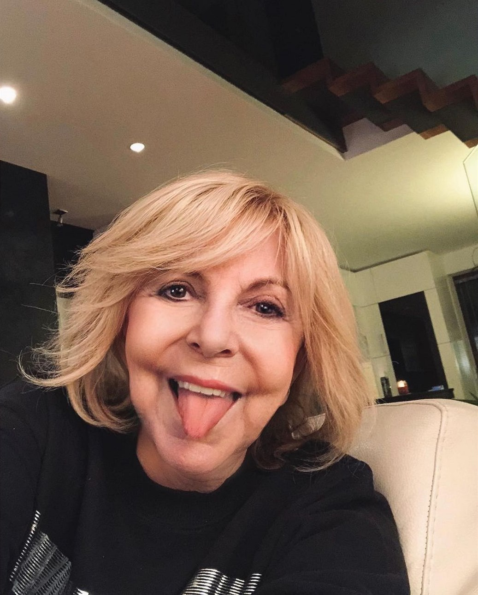

Životopis
Hana Zagorová, jedna z nejvýznamnějších českých zpěvaček, se narodila 6. září 1946 v Plzni. Vystudovala konzervatoř a její kariéra začala již v 60. letech, kdy se prosadila jako interpretka populární hudby. První větší úspěch přišel v roce 1968, kdy se stala členkou Orchestru Karla Vlacha, což jí otevřelo dveře k širší publicitě. Záhy se etablovala jako jedna z nejvýraznějších postav české populární hudby, díky své charakteristické barvě hlasu a přítomnosti na pódiu. V průběhu své kariéry spolupracovala s mnoha významnými hudebníky a skladateli, čímž si získala širokou fanouškovskou základnu.
Její diskografie je bohatá a obsahuje řadu alb, která se stala kultovními. Mezi její největší hity patří písně jako "Lásko, měj se stále ráda", "Žárlím", "Maluj zase obrázky", nebo "Duhová kulička". Hana Zagorová se proslavila nejen svou silnou vokální technikou, ale i schopností propojit pop s dalšími žánry, jako je jazz nebo muzikál. Její interpretace byla vždy emotivní a autentická, což ji činilo oblíbenou nejen u široké veřejnosti, ale i mezi odborníky a kritiky.
Kromě své zpěvácké kariéry byla i televizní osobností. Vystupovala v několika hudebních pořadech a muzikálech, kde její talent zazářil i v hereckých rolích. Osobní život Hany Zagorové byl spojován s několika významnými osobnostmi české kultury, včetně jejího manžela, herce a zpěváka Štefana Margity. I přes osobní ztráty a těžké chvíle, kdy čelila zdravotním problémům, si zachovala pozitivní přístup k životu. Její příběh je příkladem nezdolného ducha a vášnivé oddanosti umění, které formovaly její kariéru i osobnost.
